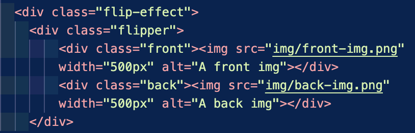
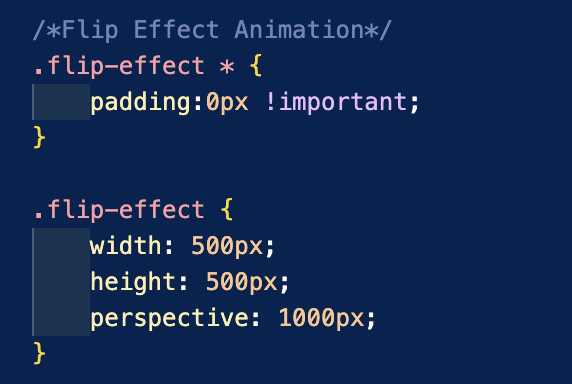

Image Hover Effect
CSS (Cascading Style Sheets) is a powerful and essential language used to control the presentation and styling of web pages. It defines how elements such as text, images, buttons, and containers should appear on the screen. CSS not only allows designers to control the layout, font sizes, colors, and margins but also provides ways to add interactive effects like hover animations. One of the many hover effects that I will talk about is the image flip effect, which creates an engaging user interaction by flipping an image or an element when the user hovers over it with their mouse pointer. The flip effect gives the illusion of a 3D transformation, making the image or content rotate and reveal the back side, similar to flipping a physical card.
In this report, I will explain how I apply a hover effect using the flip effect on an image. The flip effect is a dramatic and visually appealing animation that rotates an element along the Y-axis, showing one side initially and revealing a second image or content when the user hovers over it. This effect creates a sense of depth, making it look like the element is being flipped in 3D space. The implementation involves using HTML and CSS, particularly using CSS properties like transform, perspective, transition, and backface-visibility.
On HTML,

I create a container for the flip effect: The container is given a class of flip-effect, and it will hold the entire flip animation. Then, I added a "flipper" element inside the container: This is the element that will perform the flipping animation when hovered. The flipper element wraps around the front and back sides of the image or content. Then, Inside the flipper, I create two sides: One side will be the "front," which is visible initially, and the other side will be the "back," which will become visible after the flip. Lastly, I add images to both the front and back sides: The front and back divs will each contain an image. These images will be shown when the respective side is facing the viewer.
Moving on to CSS,

To begin, I style the flip-effect container with * (to all elements,) and inside that, I set padding to zero to very important.
Then, I style the flip-effect container: I set the width and height of the container to define the size of the image. The perspective property is a key for 3D effects. I set it to 1000px, which gives the illusion of depth when the element rotates.
Third, I style the flipper element: I added a transition property to create a smooth animation. The transition duration is set to 0.7s, meaning the flip will take 0.7 seconds to complete. The transform-style property is set to preserve-3d to maintain the 3D effect while the element is rotating. I set the position to relative to ensure the "flipper" element is positioned correctly inside the container.
Fourth, I create the flip effect on hover: I used the :hover pseudo-class to detect when the user hovers over the .flip-effect container. Inside that, I set the transform to be rotated the Y-axis by 180deg which creates the flip effect.
Fifth, I style the front and back sides: I set both the front and back sides to be given a position: absolute so that they can be positioned on top of each other inside the "flipper." Then, I set the width and height to 100% to make both sides cover the entire container area. And, set the backface-visibility to hidden so, that the image will the back side of the image when it’s flipped away.
Lastly, I style the back side of the flip which is similar to the third step. I set the back side to rotate the Y-axis by 180deg, so it is initially hidden behind the front side. When the flip effect is triggered, the back side becomes visible.